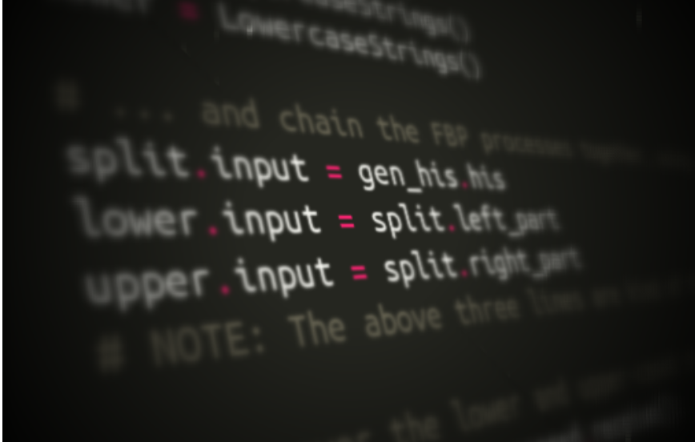

FBP inspired data flow syntax: The missing piece for the success of functional programming?

Often when I suggest people have a look at Flow-based Programming (FBP) or Data Flow for one reason or another, people are often put off by the strong connection between these concepts and graphical programming. That is, the idea that programs will be easier to understand if expressed and developed in a visual notation.
This is unfortunate, since I think this is in no way the core benefit of FBP or Data Flow, although it is a nice side-effect for those who prefer it. For example, I personally mostly prefer working with text over a graphical notation, for productivity reasons.
The purpose of this post
There are so many inherent benefits with the data flow / flow-based programming paradigm that it is hard to know where to start. Implicit pipeline parallelism, exceptional composability, testability, inspectability, code re-use are just a few examples. In this post though, I thought to illustrate how I think even just a subset of its ideas - the syntax - could potentially greatly benefit the design of e.g. functional programming API:s.
The limitations of functional call/return semantics
To make a long story really short, I think that as long as functional programming (FP) languages don’t go beyond the call/return semantics [Edit: True, most FP language have gone beyond this] or chained lazy-evaluating functions [Edit: this still seems to be state of the art in many FP langs] for creating streaming processing networks, it will not succeed at improving the situation for software engineering in general in any revolutionary way.
I see the following limitations with these:
- In the case of the call/return semantics, dependent upstream functions are often hard-coded inside the “meat” code of the functions, creating hard-coded depencies, detrimental to the composability of programs.
- “API specialities” like multiple return values, are not easy to route into different downstream paths, but typically has to be received and treated by every function that calls a multi-returnval function, creating even more intricate dependencies between “API:s” of calling and returning functions. This means that you can’t easily swap a function returning a single value, with one that returns more than one, even if the second return value is not really used, or is supposed to be used elsewhere.
Number 2. above seems to be the one that is still the most ubiqutuos in FP langs today, while number 1. is largely solved by various constructs such as .map(), .filter() etc, taking anonymous functions as one of its parameters, and allowing to build up a chain of processing steps by padding such map/filter/etc calls on each other.
Anyways, let’s look at how lazy-evaluated streaming operations are implemented in a widely known language such as python (not really a functional language, but featuring constructs commonly referred to as “functional”). More exactly, let’s look at how a bunch of lazy-evaluating python generator objects are chained together to form a sequential, lazy-evaluated, processing pipeline:
# Create a generator object using generator-comprehension syntax
gen_his = ('hi for the %d:th time!' % i for i in xrange(10))
# Create a generator that upper-cases the strings lazy-evaluatedly:
gen_uc_his = (s.upper() for s in gen_his)
# Let's print this:
for s in gen_uc_his:
print(s)
This looks all fine for a simple linear pipeline like this:
[String producer] -> [String uppercaser] -> [String printer]
But what if we want, say for example, to instead of the uppercaser, split the string in two halves, and send the first part to a lower-caser, and the rest to an upper-caser (sorry for the exceedingly synthetic example)? How do you express that with generator functions? You would have to call the same generator twice, something like:
# Create a generator object using generator-comprehension syntax:
gen_his = ('hi for the %d:th time!' % i for i in xrange(10))
# Create a generator that returns the first and second half of each string:
gen_splitted_his = ((s[len(s)//2:], s[:len(s)//2]) for s in gen_his)
# Create a generator that lower-cases the left half of the strings:
gen_lc_his = (left.lower() for left, right in gen_splitted_his)
# Create a generator that upper-cases the left right of the strings:
gen_uc_his = (right.upper() for left, right in gen_splitted_his)
# Printing omitted here for brevity.
But, this will produce an error, since running a generator function twice is not allowed, and this would not re-use the same items in memory anyway, which is kind of the main point with stream processing. Also, do you notice how we need to unpack the left and right parts of the strings, in the downstream generators that use gen_splitted_his - thus creating a dependency on its return signature!
And this is only an extremely simple example. Imagine solving these kind of intricacies in a larger networks of inputs and outputs needing to “flow” through processes!
Now, in the above example, we had hard-coded the dependencies on upstream generator functions. We could go a little more “loose-coupled” by using dependency injection, and taking the upstream generator as an argument to a function that returning a generator (which is defined by using the “yield” keyword instead of “return”, in the normal python function definition syntax):
# Create a generator object using generator-comprehension syntax:
gen_his = ('hi for the %d:th time!' % i for i in xrange(10))
# Create a generator that returns the first and second half of each string:
def gen_splitted_his(upstream_generator):
for s in upstream_generator:
yield (s[len(s)//2:], s[:len(s)//2])
# Create a generator that lower-cases the left half of the strings:
def gen_lc_his(upstream_generator):
for left, right in upstream_generator:
yield left.lower()
# Create a generator that upper-cases the left right of the strings:
def gen_uc_his(upstream_generator):
for left, right in upstream_generator:
yield right.upper()
# Chain the generators together using dependency injection
splitted_his = gen_splitted_his(gen_his)
lc_his = gen_lc_his(splitted_his)
uc_his = gen_uc_his(splitted_his)
# Now, we would loop over lc_his and uc_his separately, to print
So, using dependency injection, we have removed the hard-coded dependency
between the generators. But we still have a kind of “API” or “signature”
dependency between the gen_splitted_his and gen_{us,lc}_his, in that the
latter require to receive a generator that yields tuples of two strings. Thus,
the lower-case and upper-case generator objects are not really generic.
FBP inspired network syntax to the resque
In the flow-based programming way of defining stream processing networks, none of the above is a problem, since dependencies are not defined between functions, but between inputs and outputs of functions [1], and actually even more generally: between inputs, outputs and channel objects which goes from from the output of one task to the input of another one.
There are various ways to define the network declaratively (See the GoFlow code examples for one recent example). I have came to like a certain style that is as similar as possible to normal procedural code, by using single-assignments to connect outputs of one process (or “function”), to other processes.
I haven’t yet implemented anything like that in pure python (don’t even know how easy it would be … maybe possible using co-routines), but have done it in Go , and for the python-based Luigi workflow tool by Spotify (See our SciLuigi library for code examples ). I propose checking those two links for concrete real-world code examples, but just to illustrate how to the above toy code example could look like in vanilla python, with a little imagination:
# Create an FBP process that generates Hi's:
class GenerateHis(FBPProcess):
# Define in/out-ports
his = OutPort()
# Define main routine
def run(self):
for i in range(10):
self.his.send('hi for the %d:th time!' % i)
# Create an FBP process that splits strings into two halves:
def SplitStrings(FBPProcess):
# Define in/out-ports
input = InPort()
left_part = OutPort()
right_part = OutPort()
# Define main routine
def run(self):
for s in self.input.receive():
self.left_part.send(s[len(s)//2:])
self.right_part.send(s[:len(s)//2])
# Create a generator that lower-cases strings:
class LowercaseStrings(FBPProcess):
# Define in/out-ports
input = InPort()
lowercased = OutPort()
# Define main routine
def run(self):
for s in self.input_string.receive():
self.lowercased.send(s.lower())
# Create a generator that lower-cases strings:
class UppercaseStrings(FBPProcess):
# Define in/out-ports
input = InPort()
uppercased = OutPort()
# Define main routine
def run(self):
for s in self.input_string.receive():
self.uppercased.send(s.upper())
# Initiate ...
hi_generator = GenerateHis()
splitter = SplitStrings()
uppercaser = UppercaseStrings()
lowercaser = LowercaseStrings()
# ... and chain the FBP processes together, using single-assignment syntax:
splitter.input = hi_generator.his
lowercaser.input = splitter.left_part
uppercaser.input = splitter.right_part
# NOTE: The above three lines are kind of the gist of this whole post!! :)
# Loop over the lower and upper-cased strings separately and print:
for s in lowercaser.lowercased.receive():
print(s)
for s in uppercaser.uppercased.receive():
print(s)
# (Depending on implementation, the components might be added to a network
# component too, that drives the execution of all the processes).
So, do you see how now we have completely generic processes for lower-casing and upper-casing, without any dependencies on the number of outputs yielded by the upstream process? … and how the reason for this was that we split out the wiring of outputs->inputs to be done outside of the processes themselves (the lower.input = split.left_part part of the code example above).
- [EDIT] Note: This is not a working example, since that would require some kind of concurrent features that is not available in vanilla python (it seems something like stackless python is required). Any way, for the sake of proof-of-concept, I have implemented this same code in Go, blogged about in this follow-up post (Where the ideas behind that syntax is explained in detail in my blog post outlining how to write using this syntax in Go, on GopherAcademy ).
Concluding remarks
So, in conclusion, it seems like the flow-based programming inspired syntax presented above, does away with two of the main problems in normal call/return-style functional syntax: Hard-coded dependencies between functions, and hard-coded dependencies between input/output signature of functions.
It does this by leveraging the FBP-inspired ideas of separate network definition (outside of the functions and processes themselves), and named, separate inputs and outputs. As is also shown in the toy code example above, as well as the linked real-world examples, the syntax for connecting processes in this way, can be made very similar to normal procedural code, by using single-assignment to connect outports of one process to the inports of another.
Finally, I should say I very much welcome tips/links if I have missed some solution to the problems above in some functional programming language, as well as constructive feedback in general!
Notes in text
- [1] Note how this is very much related to a previous post of mine, touching on the same issue for workflow tools .
General notes
- Note I: See this discussion on twitter , about combining data from multiple ports.
- Note II: See also discussion on Hacker News .
- Note III: See also discussion on Reddit .
- Note IV: See especially this excellent comment in the Reddit thread .
- Note V: Have added link to a working example in Go(lang), of the final non-working python example code. See this follow-up post with the Go example !